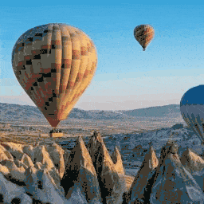
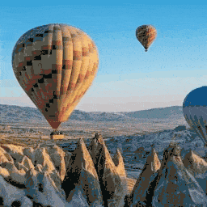

CubeDiff: Repurposing Diffusion-Based Image Models for Panorama Generation

Nikolai Kalischek 1,2
Michael Oechsle 2
Fabian Manhardt 2
Philipp Henzler 2
Konrad Schindler 1
Federico Tombari 2
1 ETH Zürich 2 Google
1 ETH Zürich 2 Google
 



We introduce CubeDiff, a novel framework for generating 360° panoramas using diffusion-based image models. By leveraging cubemap representations and fine-tuning pretrained text-to-image models, CubeDiff simplifies the panorama generation process, delivering high-quality, consistent panoramas. The approach achieves state-of-the-art results with minimal architectural modifications, enabling detailed text control and exceptional visual fidelity.

We introduce a novel method for generating 360° panoramas from text prompts or images. Our approach leverages recent advances in 3D generation by employing multi-view diffusion models to jointly synthesize the six faces of a cubemap. Unlike previous methods that rely on processing equirectangular projections or autoregressive generation, our method treats each face as a standard perspective image, simplifying the generation process and enabling the use of existing multi-view diffusion models. We demonstrate that these models can be adapted to produce high-quality cubemaps without requiring correspondence-aware attention layers. Our model allows for fine-grained text control, generates high resolution panorama images and generalizes well beyond its training set, whilst achieving state-of-the-art results, both qualitatively and quantitatively.
CubeDiff introduces a method for generating high-quality 360° panoramas using a cubemap representation, dividing the panorama into six perspective views, each with a field-of-view of 90°. The cubemap representation mitigates the distortions typical of equirectangular projections, ensuring each face more closely resembles the perspective images used in the original training data. By leveraging pretrained text-to-image diffusion models, CubeDiff fine-tunes a Latent Diffusion Model (LDM) with inflated attention layers, enabling cross-view consistency while preserving pretrained attention weights.
Operating on a 128×128×8 latent space, CubeDiff conditions the LDM on text embeddings and a single input view, with binary masks distinguishing clean conditioning latents from noisy target latents. Synchronized group normalization ensures uniform color across faces, while positional encodings derived from the cubemap’s 3D geometry guide spatial alignment. Overlapping predictions at cubemap edges further enhance coherence by ensuring seamless transitions between adjacent faces. We fine-tune only the attention layers of the LDM on a small dataset of cubemaps derived from equirectangular panoramas using the standard diffusion L2 loss.
@misc{kalischek2025cubediffrepurposingdiffusionbasedimage,
title={CubeDiff: Repurposing Diffusion-Based Image Models for Panorama Generation},
author={Nikolai Kalischek and Michael Oechsle and Fabian Manhardt and Philipp Henzler and Konrad Schindler and Federico Tombari},
year={2025},
eprint={2501.17162},
archivePrefix={arXiv},
primaryClass={cs.CV},
url={https://arxiv.org/abs/2501.17162},
}